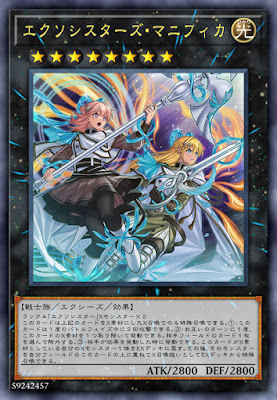

【主題牌組】「驅魔修女」牌組介紹（エクソシスター／EXORSISTER）
我們是神的代理人 神罰的地上代行者
我們的使命是將反抗吾主的愚者
連其最後一絲血肉也滅絕殆盡
「驅魔修女」使補充包DBGC中的超量系列，
統一光屬性，下級為4星魔法使，超量為戰士族，
其下級共通特色是對手將卡片離開墓地，可以從觸發效果從額外特召超量，
並且超量怪以本家特召為素材超量的回合也有特別的效果，
主要設計應該是讓你在對手回合觸發效果變身干擾。
不過也因此比較被動，遇到墓地使用率較低的牌組比較難去期待變身。
另外下級也是兩兩一隊，配合隊友可以回血，陷阱也可以去特召一對出場。
驅魔修女（エクソシスター），エクソシスト（exorcist，驅魔人）＋シスター（sister，修女）合併的字段。
對岸民間翻譯採用救祓少女，可能是因為一開始海報玩哏的標語，寫著救乙女（エクソシスター）因此去調整的翻譯。
當然一開始也因為海報的關係，也有人把救乙女當作是官定漢字並稱呼這個系列。
另外，官方簡體中文的字段則是選用驅魔姊妹。
卡片介紹－
《驅魔修女們的聖詠》
階級四的「驅魔修女」超量怪獸二體
此卡用上述之卡做為超量素材的超量召喚才能特殊召喚。
①：此卡在1次的戰鬥階段中可以進行2次攻擊。
②：雙方回合1次，將此卡1個超量素材取除才能發動。選對方場上1張卡除外。
③：對方將效果發動時才能發動。選擇做為此卡超量素材的1體我方超量怪獸回到額外牌組。
那之後，把該怪獸在我方場上的此卡上方重疊當作超量召喚從額外牌組特殊召喚。
修女tagteam，以下會用雙人組來稱呼，素材比較嚴苛但效果蠻優秀的，
打2拳表示雙人組，加上吉卜莉的BUFF搶血優秀
加上非指定除去的效果也是優秀的妨礙跟解場，
另外也能對應對手情形跳出素材的超量，也由於這個效果沒有限制超量本家，也可以用ZEXAL場地去填一些黑科技搭配。
《驅魔修女﹒阿們武身》
此卡名的卡1回合僅能發動1張，從墓地特殊召喚的怪獸不在對方場上存在的場合，不在對方回合不能發動。
①：支付800生命值，以我方場上1體「驅魔修女」怪獸為對象才能發動。把1體同名卡不在我方場上存在的「驅魔修女」超量怪獸在對象怪獸上方重疊當作超量召喚從額外牌組特殊召喚。
比較難期待可以在自己回合使用的卡片，通常是扣著在對面回合干擾。
通常是以米迦愛麗絲抓上手看情形去換人，或是下怪沒辦法超量時在對手回合變身。
取的是アーメン(Amen)跟アーマメント(Armament)武装的意思。
簡中避免宗教意味使用的是成願武裝。

《驅魔修女﹒把握旦夕》
此卡名的②③效果1回合各僅能使用1次。
①：我方場上的「驅魔修女」怪獸不會成為從墓地特殊召喚之怪獸的效果對象。
②：我方把「驅魔修女」怪獸超量召喚成功的場合，宣言1個卡名才能發動。直到回合結束為止，宣言之卡以及原卡名和該卡相同的卡效果無效化。
③：我方的「驅魔修女」怪獸進行戰鬥的攻擊宣言時，以對方場上1張魔法‧陷阱卡為對象才能發動。該卡破壞。
基本上①效果是很難期待的抗性，擋指定還綁定墓地特召的怪，當個添頭就好。
②效果則是可以配合變身去干擾對手，也能作為自己回合防坑或處理抗性的方式。
③效果則自己是攻宣及被攻擊的攻宣時可以炸魔陷，同樣也是比較順風的效果。
在雙人組及瑪爾法出來之後，超量的主動性增加，②效果也比較能期待了。
Carpe diem，把握當下，簡中翻惜取魔鬼可能有結合卡圖設定的意思在

《驅魔修女﹒共赴何方》
此卡名的卡1回合僅能發動1張。
①：支付800生命值才能發動。從牌組選擇1體「驅魔修女」怪獸，再從牌組選擇1體該怪獸所記述卡名之「驅魔修女」怪獸，
那2體怪獸特殊召喚。因此效果特殊召喚的怪獸在結束階段回到持有者牌組。此卡的發動後，直到回合結束我方不是「驅魔修女」
怪獸不能從額外牌組特殊召喚。
能被檢索的一個穩定除外，且有機會賺到一個附帶效果，
以場上怪去超量，可以配合共赴何方跳的怪超量，或是變身後去出雙人組，
也能配合本家變身後再除外對方卡片。
不過有場上只能站本家的限制，比較害怕壞獸之類的卡。
Litania，連禱的義大利語，牧師和會眾交替做出的簡短祈禱。
競技卡表－
遊玩風格－
基本上是伴隨著對面移動墓地，去變身干擾的牌組，
但並不是什麼牌組都仰賴墓地，很難期待以和平訪問、共赴何方以外的方式去完成戰術。
陷阱看對面抓墓情形使用，或留在自己回合再做R4，生抽會比抓給對面看好一點。
在瑪爾法出來以後，主動性增加，一卡就能取得連禱的妨礙或是多一卡去出雙人組
瑪爾法的變身條件也更寬鬆，留場也是一個選擇。
《天霆號 宙斯【負齒兵庫】》
超量怪解場的最強大招，驅魔（物理）。